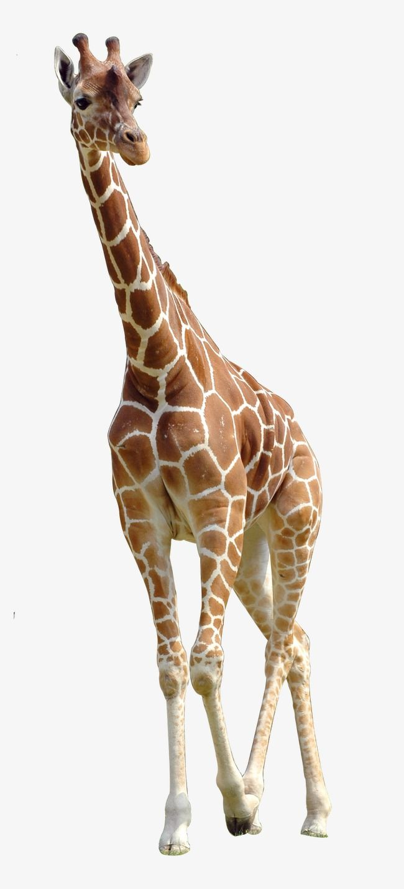

La jirafa es el animal terrestre más alto del mundo. Se caracteriza por su cuello largo y por las manchas que cubren todo su cuerpo.
Las jirafas viven en las sabanas y zonas abiertas de África.
Se alimentan principalmente de hojas de árboles, especialmente de acacias.